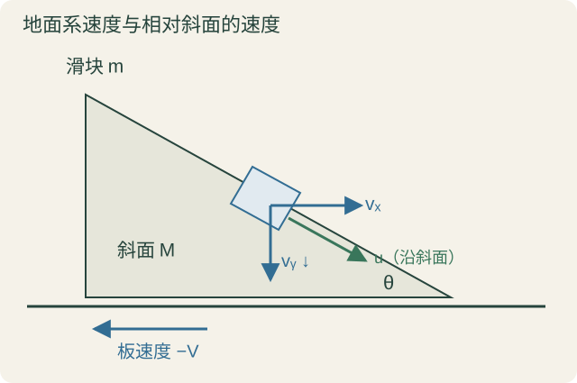
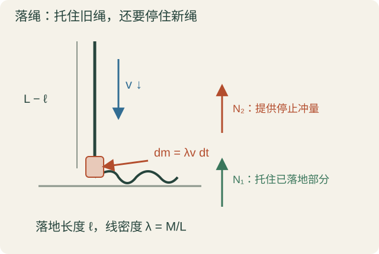
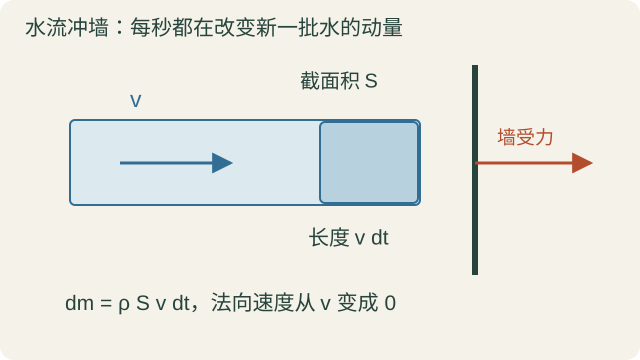
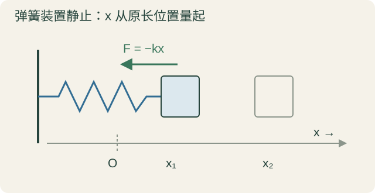
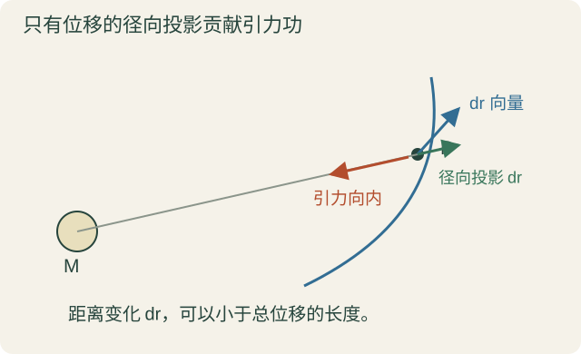
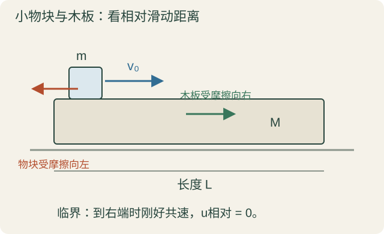
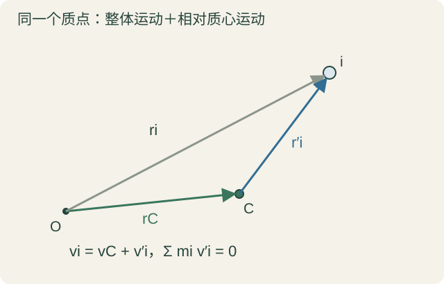

10 月 15 日 · 第二章 §2.4，第三章 §3.1
把整体运动与内部运动分开
上一讲最后定义了总动量：把各个质点的 mivi 按向量相加。这一讲先说明什么能改变总动量，再用质心、守恒和冲量解题；随后转到功与动能，最后把总动能拆成整体平动和内部相对运动两部分。
两条线始终要分清：合外力决定总动量怎么变；总动能怎么变，则要把外力功和内力功都算上。 内力在第一条里抵消，不代表它在第二条里也抵消。
1 内力为什么不能改变总动量
对第 i 个质点，动量定理是 dpi=Fidt。把同一时刻所有质点加起来：
dP=i∑dpi=(i∑Fi,外+i∑Fi,内)dt.
系统内部的相互作用力，一对一对满足牛三，Fij+Fji=0。所有力乘的是同一个 dt，所以内力的冲量也两两抵消。剩下
dtdP=F合外,ΔP=∫F合外dt.
内部可以互相推、互相拉，把动量从一个物体转给另一个，但不改变系统总动量。 能改变总动量的是外界给整个系统的合冲量。
内力、外力怎么分，要先确定系统。只选滑块，木板给滑块的摩擦是外力；把滑块和木板一起选，接触摩擦就变成一对内力。不是某种力天生叫内力或外力。
这里默认牛顿力学中质量不变、由同一批质点组成的系统。后面的落绳虽然“还在动的部分”质量变化，但整根绳仍是固定的一批质点，所以可以对整绳直接用此式。
2 质心不是多出来的实体，它代表整体怎样走
对总质量 MT=∑imi 的系统，质心位置定义为
rC=MT∑imiri.
就是按质量加权的平均位置。连续分布时，分子换成 ∫rdm。质心不一定落在材料里面：比如圆环的质心在空的圆心处，它是描述分布的点，不是额外藏了一颗粒子。
对定义两边求时间导数：
MTvCMTaC=i∑mivi=P,=dtdP=F合外.
所以
P=MTvC,F合外=MTaC.
第二条叫质心运动定理。把全部质量想象集中到质心，就能描述系统整体的平动；但它没有告诉你内部怎么转、怎么变形。
在外太空抛出一把菜刀，没有合外力时，它可以一边翻转一边飞。不能说每个位置都做匀速直线运动；但菜刀的质心确实沿直线匀速走。上一讲的旋转圆盘也是一样：质心静止，所以总动量为零，内部仍然有运动和动能。
3 动量守恒要看哪一个方向
如果整个过程中 F合外=0，就有 P=常向量，这叫动量守恒。不是只在某一瞬间合外力为零，也不是一定完全没有外力。 外力互相平衡，也能保证总动量不变。
还可以只守恒一个分量。比如全过程都有 F合外,x=0，那么
Px=常量.
竖直方向可以有不平衡的外力，不影响水平方向守恒。接下来的可移动斜面，就是这个区别。
实际做题，先选系统、列外力、按方向投影，再判断哪个分量守恒。动量是向量，统一正方向最稳妥。若分别把两物体运动方向定义为各自速度大小的正向，式子会出现看似不寻常的加减号；它们来自投影约定，不是另一套物理定律。
4 滑块从可移动斜面滑下：三个方程怎样配起来
质量 M 的斜面放在光滑水平地面上，倾角 θ；质量 m 的滑块与斜面之间也光滑。两者从静止释放，滑块下降竖直高度 h，求速度。

滑块、可移动斜面、地面速度与相对速度 · 点图可放大
把斜面画成向右下方倾斜。取向右为 x 正向、向上为 y 正向。设斜面向左的速率为 V，滑块在地面系中的速度为 (vx,−vy)，其中 vy 表示向下速率。再设滑块相对斜面的下滑速率为 u。
先明确：沿斜面的，是滑块相对斜面的速度，不是地面测到的滑块速度。 因为斜面自己也在动。
对“滑块＋斜面”系统，外力是重力和地面的竖直支持力，没有水平外力。所以水平动量守恒在初始的零值：
mvx−MV=0.
竖直总动量不守恒，不能再写一个竖直动量守恒来凑方程。
机械能则守恒：
21m(vx2+vy2)+21MV2=mgh.
为什么接触支持力没破坏系统机械能？单个支持力可以做功，一对接触支持力的做功和却为零。 斜面确实被推着运动、获得动能，因此不能说“支持力对斜面不做功”。但光滑接触使相对运动沿切面，作用力沿法线，两力的总功率为力点乘相对速度，所以为零。地面的支持力作用点没有竖直位移，也不做功。
还缺一个约束：相对速度沿斜面。因此
vx+V=ucosθ,vy=usinθ.
这里为什么是 vx+V？因为斜面的水平速度是 −V，相对速度是 vx−(−V)。若消去 u，就得到
vx+Vvy=tanθ.
斜面向左退，使滑块的地面水平速度比相对水平速度小；竖直分量不变，所以地面看到的下滑方向比斜面本身更陡。
所以板书写的 ctgθ 就是 cotθ，对应倒过来的比例 (vx+V)/vy。它不是 cosθ；转写在这里容易识别错。
先解两个线性关系。由 mvx=MV 和 vx+V=ucosθ 得
vx=M+mMucosθ,V=M+mmucosθ.
再代回能量式。水平两项合并为
21mvx2+21MV2=21(M+m)2mM2+Mm2u2cos2θ=21M+mmMu2cos2θ.
加上竖直动能 21mu2sin2θ，得到
21m(M+mMcos2θ+sin2θ)u2=mgh.
所以
u2=M+msin2θ2gh(M+m).
取沿下滑方向的正根，再用前面的线性关系求 vx,V,vy 就行。不必硬解三个未知量的二次方程组；先合并水平动能，最后只开一次平方根。 本讲后面会解释，合并后出现的 mM/(M+m) 正是约化质量。
检查 M→∞：斜面趋于不动，u2→2gh，回到固定斜面的结果。
5 绳子落地，地面为什么不只托住落下那一段
一根匀质、柔软的绳，长 L、总质量 M，初始竖直悬垂，下端刚好接触地面。松开后自由下落，落地部分停住、不反弹。设已落下长度为 ℓ，求这时地面受到的压力大小。
用牛三，地面对绳的支持力 N 与绳对地面的压力大小相同。线密度记为 λ=M/L。支持力有两件事要做：托住已经静止的绳，还要不断把新落下的绳停住。

落绳的静止部分、运动部分和正在停下的微元 · 点图可放大
第一部分容易：地面上静止的绳重为
N1=λℓg.
第二部分看一小段时间 dt。未落地部分按题设自由落体，此刻速率为 v；在 dt 内，落到地面的绳长是 dℓ=vdt，质量为
dm=λvdt.
这块绳的速度从向下的 v 变成零。取向上为正，速度增量是 0−(−v)=v，动量增加 dmv，需要向上的冲量：
N2dt=dmv=λv2dt.
所以 N2=λv2。这小块自身的重力冲量是 gdmdt，为 dt2 量级，不贡献上面的一阶冲量；这不是忽略整根绳的重力。
又因为从静止下落了 ℓ，v2=2gℓ，于是
N=N1+N2=λℓg+2λℓg=3LMgℓ,0<ℓ<L.
多出来的那一项来自连续的动量改变。 只算已落地绳重，会漏掉冲击。
同一道题也可以对整根绳用动量定理。取向下为正，已经落地部分动量为零，运动部分质量为 λ(L−ℓ)，所以
P=λ(L−ℓ)v.
对时间求导时，两部分都要导：
dtdP=−λℓ˙v+λ(L−ℓ)v˙=−λv2+λ(L−ℓ)g.
整绳外力向下是 Mg−N，于是
Mg−N=−λv2+λ(L−ℓ)g.
用 M=λL 整理，又得到 N=λv2+λℓg。运动部分质量在变，不能把 d(mv)/dt 只写成 mv˙。
这题采用柔绳、未落地段自由落下、落地即停止的理想模型，不用机械能守恒。公式描述正在落地的过程；全绳停稳后没有持续冲击，支持力恢复为 Mg，不能把 ℓ=L 的过程极限当作最终静态值。
6 水流冲墙：同样是不断停下一批质量
绳子可以换成水流。水密度为 ρ，速度 v，垂直截面积 S。设水垂直打到墙上后，沿入射方向的速度降到零，没有沿原路反弹。

水流在短时间内带来的质量和法向动量 · 点图可放大
在 dt 内，打到墙上的水柱长 vdt，质量
dm=ρSvdt.
水的法向动量要改变 dmv，所以墙给水的反作用力大小满足
Fdt=ρSv2dt.
墙承受的冲击力和以入射截面积计的平均压力为
F=ρSv2,p冲击=SF=ρv2.
这描述的是整束水流法向动量的改变，不是直接把伯努利公式里的 21ρv2 当作相同量。若反弹或喷流方向不同，要重新算速度的法向增量。
课堂用 ρ≃103kg/m3、v=50m/s 作量级估算，得到 2.5×106Pa，约 25 个大气压。重点在于冲击与速度平方有关，这和落绳的 λv2 是同一种动量流效应。
7 功是沿路累积，为什么又依赖参考系
下面进入第三章。力在一小段位移上做的功是
dW=F⋅dr.
从 A 沿路径 L 到 B，把每段加起来：
WA→B,L=∫A,LBF⋅dr.
不同路径可能经过不同的力分布，或者走出不同方向，所以一般只给起终点，还不能确定功。这叫过程量。 动能 21mv2 则只要给定当前速度就能确定，是状态量；势能若定义好了，也由当前位形确定。
功还依赖参考系，因为这里的 dr 是在所选参考系里测到的位移。例如在两个相对匀速平动的系中，dr′=dr−udt，同一个真实力的功满足
dW′=F⋅dr′=dW−F⋅udt.
同一过程的功可以不同。对一个跟随物体平动的参考系，物体自身没有位移，这个力对它的功就为零；若这个系在加速，列动能定理时还要考虑惯性力。
重力做功在地面系中为 mg(yA−yB)，这里只用初末高度。保守力的特殊之处是：虽然功仍是过程中的累积，最后却能用初末位置的函数差表示。接着用弹簧和万有引力把这件事算清楚。
8 弹簧做功：坐标必须代表伸长量
水平弹簧一端固定，在弹簧装置静止的参考系里，取原长对应的平衡位置为 x=0，弹簧对物块的力为 Fx=−kx。负号表示恢复方向。

弹簧原长位置、伸长量与弹簧力方向 · 点图可放大
从 x1 到 x2，算的是弹簧对物块的功，不是外界拉弹簧的功：
W1→2=∫x1x2(−kx)dx=[−21kx2]x1x2=21k(x12−x22).
如果继续拉伸，x2>x1>0，弹簧阻碍运动，算出负功，符号一致。如果先拉过头到 x3，再退回 x2，中间两段会抵消，仍得到同一个结果。一维也有不同过程，不是只能沿一条路单调走。
如果坐标原点不在平衡位置，平衡坐标为 xeq，就应写
Fx=−k(x−xeq).
这里需要的是伸长量，不能换了坐标原点以后还不加思考地写 −kx。上述功函数以弹簧支座静止为前提；支座在别的系里运动时，单个弹簧力的功不能原样照搬。
9 万有引力做功：向量位移为什么变成了标量 dr
选大质量物体 M 为静止参考点，r 从它指向小物体 m，r=∣r∣。引力为
F=−r2GMmr^.
物体可能沿曲线运动，但引力只沿径向，所以只有位移的径向部分贡献功：
r^⋅dr=dr.
这里左边的 dr 是向量位移，右边 dr 是两者距离的微小变化。绕着力心走而距离不变，径向力就不做功。

曲线路径中的向量位移与径向投影 · 点图可放大
也可以不用画角，直接用代数验证。因为 r⋅r=r2，两边微分：
2r⋅dr=2rdr.
除以 2r，正好得到上面的投影关系。于是
WA→B=∫ABF⋅dr=∫rArB−r2GMmdr=[rGMm]rArB=GMm(rB1−rA1).
如果往外走，rB>rA，括号为负，引力做负功；往里走则做正功。结果只看初末距离，不看中间怎样绕，所以在这个力心参考系里具有保守性。
更一般地，只要是 F=f(r)r^ 的球对称有心力场，dW=f(r)dr，就可以写成只依赖初末距离的积分。f(r)>0 表示向外排斥，f(r)<0 表示向内吸引。“沿径向”还要配上大小只依赖距离，才能这样直接积分。
功率是功随时间的变化率：
P=dtdW=F⋅v=F切v.
它是标量。这里用 P 与总动量向量 P 区分。力垂直速度时，功率为零。
10 一对力相反，为什么做功不一定抵消
牛三让一对内力相反，但它们作用在不同物体上，乘的位移不一定相同。所以不能从 F21+F12=0，推出两力做功和为零。
约定 F21 是 2 对 1 的力，F12 是 1 对 2 的力。令相对位置 r=r1−r2，两力的微元功和为
dW对=F21⋅dr1+F12⋅dr2=F21⋅(dr1−dr2)=F21⋅dr.
如果这对质点力还沿两者连线，可以写成 F21=fr^，就进一步有
dW对=fdr.
两物体之间距离怎样改变，才是这一对力做功和的关键。 参考系平动或转动都不改变同一时刻两点间距离，所以这种沿连线的牛三力对，其做功和不依赖参考系。这里的 f 是带方向正负的径向分量，不一定是正的力大小。
这不等于每个力的功都与参考系无关。恰恰相反，单个功会变，一对力相加后的结果才有这个性质。
若只换一个平动系，即使一对接触力不沿我们画的物体中心连线，也有同样方便的消去：两个位移都减去相同的 dr0，多出的项是 −(F21+F12)⋅dr0=0。因此后面算一对滑动摩擦力的总功，可以放心换到随木板平动的系。
几个重要结果随之得到：
- 沿连线的有限内力，对两点间距离不变的刚性系统，做功和为零。碰撞的刚性极限把形变和极大冲击力藏起来了，不能用“距离没变”直接断言冲击没有能量损失。
- 理想接触中，一对静摩擦力的接触点没有相对滑动，所以总功率为零，但每个摩擦力都可能做功。不是“静摩擦力永远不做功”。
- 一对滑动摩擦力的总功为负，取决于相对滑动路程。相反的力不代表功会抵消。
- 对一对万有引力，可以选 M 静止的系，只算对 m 的功，再把结果理解成两体内力的做功和：GMm(1/rB−1/rA)。这时 rA,rB 都是相对距离，结果不依赖参考系。
还要分清：功和与参考系无关，不等于它一定与路径无关。 例如滑动摩擦力的总功仍然依赖相对滑过的路程；万有引力的总功才进一步只看初末相对距离。
11 动能定理：把力沿位移积起来
回到惯性系，质量不变的质点受合力 F=ma。因为 dr=vdt，所以
dW=F⋅dr=mdtdv⋅vdt=mv⋅dv=d(21mv2).
最后一步用的是 d(v⋅v)=2v⋅dv。定义动能 Ek=21mv2，便有
dW=dEk,W合=ΔEk.
这里用的是合力的功。某一个力做功，不一定就等于全部动能增量，除非其他力总功为零。
与动量定理比较：∫Fdt 是力对时间的累积，得到向量动量的变化；∫F⋅dr 是力沿位移的累积，得到标量动能的变化。一个适合追踪整体动量和冲击，一个适合联系速率与路程、位置。
课堂还插入“活力”的历史：早期曾用 mv2 描述运动效应，并与动量的角色有过争论；后来才逐渐形成今天功、动能及 1/2 系数的写法。这里要抓住的是动量与动能并非互相替代的两个答案，它们反映不同的累积效果，不需要靠历史人物的争论来选一个弃一个。
对系统，把各质点动能定理相加：
Ek=i∑21mivi2,ΔEk=W外+W内.
连续分布就写成 Ek=∫21v2dm。内力在总动量方程中抵消，在总动能方程中一般不会消失。 如果选非惯性系，还要加入惯性力做的功，速度、位移和动能都用该系中测得的量。
12 物块滑上木板：什么时候不会从另一端滑出去
光滑水平地面上有一块质量 M、长度 L 的木板。小物块质量 m，以向右初速度 v0 从左端滑上板，板初始静止。物块与板之间滑动摩擦系数记为 μf。
这里用 μf 表示摩擦系数，用 μr 表示约化质量，避免把两个“缪”混为一谈。

物块相对木板滑动、成对摩擦力以及临界共速状态 · 点图可放大
两种可能：还没滑到另一端就达到共同速度，之后一起匀速运动，此时没有继续相对滑动的趋势，连静摩擦也不需要；或者滑到另一端时仍然相对板向前滑，最终滑出去。临界状态就是恰好滑过相对距离 L 时，两者刚好共速。
先选物块和木板为系统。没有水平外力，水平动量守恒：
mv0=(M+m)v,v=M+mmv0.
但机械能不守恒，因为有相对滑动摩擦。写系统动能定理：
W内=21(M+m)v2−21mv02.
代入共速结果，逐步整理：
ΔEk=21M+mm2v02−21mv02=21[M+mm2−m(M+m)]v02=−21M+mmMv02.
再算一对摩擦力的功。换到随板平动的参考系，板不动，所以板上那一个摩擦力的功为零；物块相对板滑过 L，摩擦反着相对位移，因而
W内=−μfmgL.
这一步是在算一对真实摩擦力的总功，不是在板系里漏掉惯性力后，单独对物块误用 W=Δ(21mv′2)。系统动能差仍然用刚才地面系的结果。
临界条件就是两种表达相等：
μfmgL=21M+mmMv02.
所以
v0,临界2=2μfgLMM+m.
若
v02≤2μfgLMM+m,
就不会以非零相对速度滑出另一端；大于这个值则会滑出。
检查结果：M→∞，板近似固定，回到 v02≤2μfgL；M 很小，板容易被带起来，两者很快共速，反而不容易滑出。木板很轻时不能还用“固定地面上的刹车距离”来判断。
为什么又出现约化质量？水平方向上，这就是没有合外力的两体相对运动。定义
μr=m+MmM,u=vm−vM.
两物体的加速度分别为 −μfg 和 μfmg/M，相减得
u˙=−μfg(1+Mm),μru˙=−μfmg.
也可以直接用这个约化质量方程乘相对位移、积分：
−μfmgL=Δ(21μru2)=0−21μrv02.
与刚才完全一致。约化质量不是巧合，是系统整体动量不变后，剩下的相对运动所对应的质量参数。
13 把两体动能拆开，斜面题就不用硬解二次方程
对质量 m1,m2、速度 v1,v2 的两体，定义
MT=m1+m2,P=m1v1+m2v2,u=v1−v2,μr=MTm1m2.
总动能可以重新写成
Ek=2MTP2+21μru2=21MTvC2+21μru2.
前面一项是整体质心运动，后面一项是内部相对运动。它是一个恒等分解，不要求动量先守恒才能写；动量守恒的作用是让第一项不随过程改变。
验证一下，展开右边两项：
2MTP221μru2=2MTm12v12+m22v22+2m1m2v1⋅v2,=2MTm1m2(v12+v22−2v1⋅v2).
交叉项正负抵消。v12 的系数是 (m12+m1m2)/(2MT)=m1/2，v22 同理，正好还原原来的两项动能。
回看斜面题。水平方向动量守恒在零值，所以水平质心动能为零，剩下
21mvx2+21MV2=21μr(vx+V)2.
这里相对水平速率为 w=vx+V，竖直速率为 vy=wtanθ。于是能量式可直接写成
21(μr+mtan2θ)w2=mgh.
只剩一个未知量的平方，取正根就行；然后由 vx=Mw/(M+m)、V=mw/(M+m)、vy=wtanθ 找回各速度。这解释了前面“先合并水平动能”的办法为什么有效。 不能把整个斜面系统的质心都说成静止：这里只是水平分量为零。
孤立两体的 P 不变，质心动能就不变。所以内力总功只能改变相对动能：
W内=Δ(21μru2).
这与上一讲从约化质量方程积分得到的式子相同。
14 柯尼希定理：多体也能分成“整体＋内部”
前面的分解不只适用于两体。让一个参考系跟着系统质心平动，但不相对背景系转动；它叫质心系。

同一质点的位置与速度拆成质心运动和相对质心运动 · 点图可放大
第 i 个质点的位置、速度满足
ri=rC+ri′,vi=vC+vi′.
ri′、vi′ 都是相对质心系的量。先找出质心的特殊性。把位置关系乘 mi 后求和：
i∑miri=MTrC+i∑miri′.
左边按质心定义恰好就是 MTrC，因此
i∑miri′=0.
对时间求导，质量不变，所以
i∑mivi′=P′=0.
质心系中的总动量恒为零。 不要求每个粒子的速度为零，也不要求每个方向的分布完全一样；只要求加权向量和抵消。质心系若在加速，它还可能是非惯性系，但这个运动学关系仍成立。
接下来展开总动能，每项都不要漏：
Ek=i∑21mi(vC+vi′)2=i∑21mivC2+i∑21mivi′2+i∑mivC⋅vi′=21MTvC2+i∑21mivi′2+vC⋅0i∑mivi′.
vC 是整个系统共同的速度，不随求和指标 i 变化，所以能提出求和号；交叉项正是 vC⋅P′，因此为零。
得到柯尼希定理：
Ek=EkC+Ek′=21MTvC2+i∑21mivi′2.
前面是整个系统一起走的动能，后面是坐在质心上看见的内部运动动能。 对刚体，后者可包含绕质心转动；对可变形系统，还可以包含各部分相对运动。它不是只能给刚体使用的公式。
两体时，质心系中有 m1v1′+m2v2′=0，结合 u=v1′−v2′，得到
v1′=MTm2u,v2′=−MTm1u.
把它们代入 Ek′，就得到 Ek′=21μru2。所以约化质量那项，就是两体在质心系中的总动能，并不是凭空造出的“虚拟能量”。
15 碰撞能损失哪部分动能，整团气体运动算不算升温
把柯尼希定理用到碰撞。若碰撞时间很短，外力冲量可忽略，总动量近似守恒，质心速度在碰撞前后不变。于是整体质心动能那一部分不能靠内部碰撞损失；能转化为形变、振动、热等形式的是相对运动动能。
两体完全非弹性碰撞，共速以后相对速度为零。若没有额外内部能量释放，能损失的最大动能就是初始的
ΔEk,损失,max=Ek,初′=21μru初2.
这一讲只是借碰撞说明质心系动能的意义，没有开始下一次课关于恢复系数和完整碰撞分类的推导。
板书把这部分称为“资用能”：在给定总动量的碰撞问题中，可供转化的那部分动能。它不是热力学自由能。 两个名称在转写里容易混淆。
最后把同样的区分用到气体。只考虑分子平动、忽略相互作用势能的理想模型中，分子相对整体质心的杂乱运动动能，构成内能的相应部分；若还考虑分子转动、振动等，要另计对应内部自由度。
所以把一团气体整体平移得更快，只增加 21MTvC2，不自动代表内部运动更剧烈，也不自动代表温度升高。要看内能，就先扣除整体运动，回到随质心运动的系里看。
同样，动量守恒只保证质心动能不变，不保证系统总动能不变；内力仍然可以把内部相对运动转成其他形式。这正好接回本讲开头的区别。
做题时怎样选工具
| 你要找什么 |
优先用什么 |
最容易混淆的地方 |
| 整体动量或共同速度 |
合外力冲量、动量守恒 |
先选系统，再按方向判断 |
| 短时间内不断停住的质量 |
Fdt=dmΔv，或对整体算 dP/dt |
不漏质量流动带来的动量变化 |
| 速率与位移、高度的关系 |
动能定理或机械能守恒 |
有内摩擦时不能直接机械能守恒 |
| 两物体接触时的功 |
先算一对力总功，利用相对速度或路程 |
力相反，不代表功相消 |
| 两体相对运动 |
约化质量 μr |
不和摩擦系数 μf 混用 |
| 整体运动和内部运动 |
柯尼希分解 |
质心系动量为零，动能未必为零 |
本讲范围与核对来源
正文覆盖 10 月 15 日正式授课内容：系统动量定理、质心和分量守恒、可动斜面、落绳的局部冲量与整体动量两种解法、水流冲击、功的过程性和参考系依赖、胡克弹力与万有引力功、一对内力功和、动能定理、摩擦木板临界、约化质量与两体动能分解、柯尼希定理、碰撞资用能与理想气体内能的解释。
核对材料：10 月 15 日录屏及录音转写；《第二章 牛顿定律 动量定理》p.13—14、《第三章 能量》p.1—4 中实际讲到的内容。讲稿 p.4 下半部分的保守力系统理论，及后续碰撞章节，不冒充本讲已经展开的内容。
转写中的“质心/纸心”“约化质量/月化质量”“ctg/余弦”“资用能/自由能”等，按板书和数学关系校正。讲稿中的积分上下限、引力径向符号、动能展开交叉项等个别排印处，正文按直接积分与展开后的正确关系书写。柯尼希定理交叉项系数为 1，提出后是 vC⋅∑imivi′，不是再多乘一次 2。
斜面三个速度的完整消元、摩擦临界代数、动量流的一阶量说明，是为接通课堂推导补出的中间步骤。图为重新绘制的课堂装置示意。原始录屏、音频和讲稿保留在本地，不在公开页面转载。